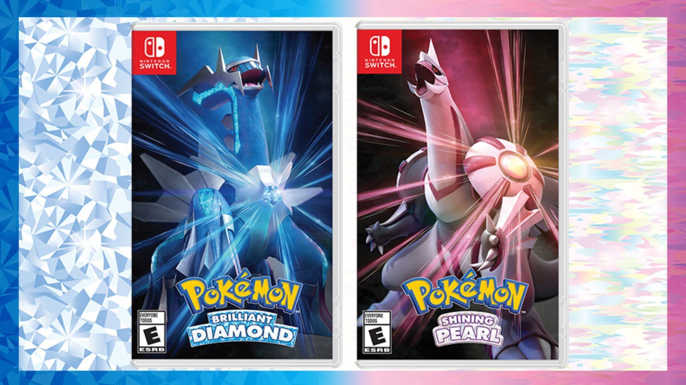
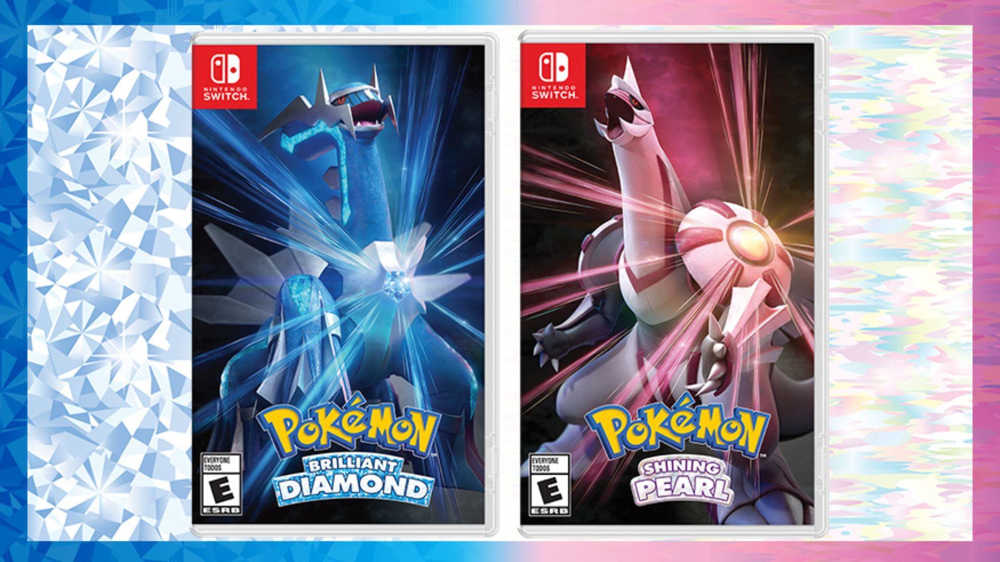

¡Nuevo juego exclusivo para Nintendo Switch!
Se acaba de anunciar un emocionante juego exclusivo para la Nintendo Switch que promete revolucionar el género...
Las consolas de videojuegos son dispositivos electrónicos diseñados para jugar videojuegos en un televisor u otra pantalla. Han sido parte importante de la cultura popular desde la década de 1970, ofreciendo experiencias de juego únicas y entretenimiento para personas de todas las edades. Con el tiempo, han evolucionado desde sistemas simples hasta complejas plataformas de entretenimiento multimedia.
Las consolas de videojuegos han evolucionado significativamente desde sus inicios en la década de 1970. Surgieron con juegos simples y gráficos básicos, pero han evolucionado hasta convertirse en poderosas plataformas de entretenimiento. Algunos hitos importantes en su historia incluyen el lanzamiento de la Atari 2600 en 1977, la introducción de Nintendo Entertainment System (NES) en 1985, el surgimiento de Sega Genesis y Super Nintendo en los años 90, la revolución del gaming en línea con PlayStation 2 y Xbox, y la constante evolución de la tecnología con PlayStation 4, Xbox One y Nintendo Switch. En resumen, las consolas han pasado de ser dispositivos simples a sofisticadas plataformas de juego que han transformado la industria del entretenimiento.
Se acaba de anunciar un emocionante juego exclusivo para la Nintendo Switch que promete revolucionar el género...
La PlayStation 5 (PS5) fue lanzada mundialmente el 12 y 19 de noviembre de 2020. Ofrece un rendimiento gráfico excepcional y tiempos de carga rápidos gracias a su potente hardware, incluyendo un procesador AMD Ryzen y una GPU personalizada. Su almacenamiento SSD proporciona una experiencia de juego fluida. La PS5 cuenta con un diseño futurista y elegante, además de tecnología de audio inmersivo. Es compatible con la mayoría de los juegos de PS4 y cuenta con una sólida alineación de títulos exclusivos y multiplataforma. Desde su lanzamiento, Sony ha seguido actualizando la consola para mejorar su funcionalidad y experiencia de usuario. En resumen, la PS5 representa un salto importante en la experiencia de juego, ofreciendo tecnología de próxima generación y una emocionante biblioteca de juegos.